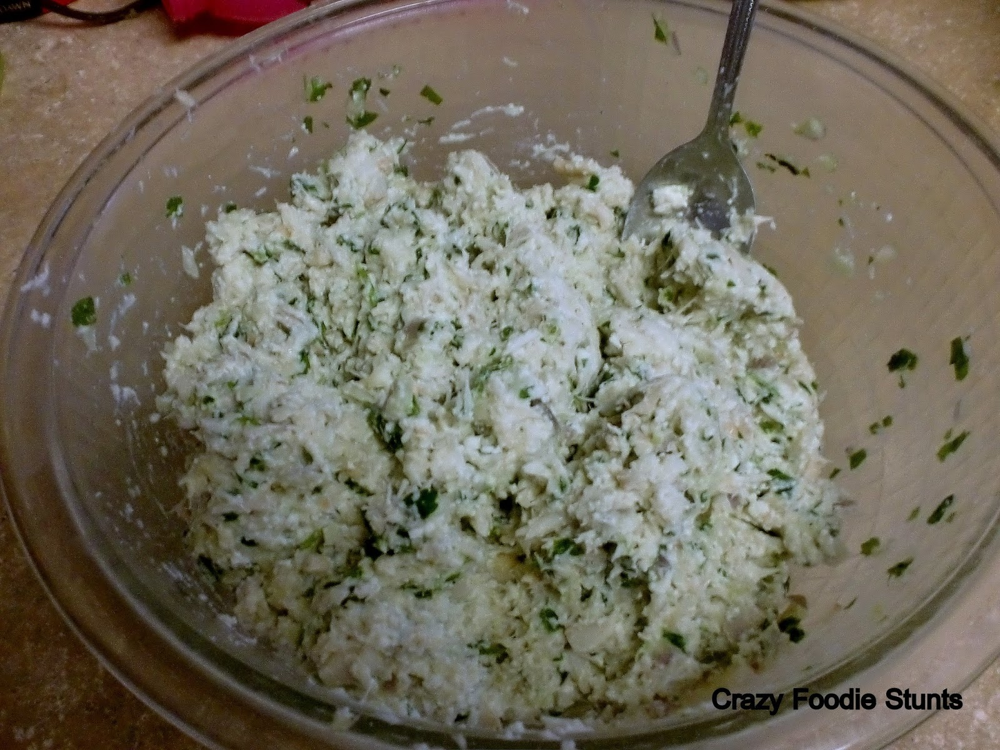
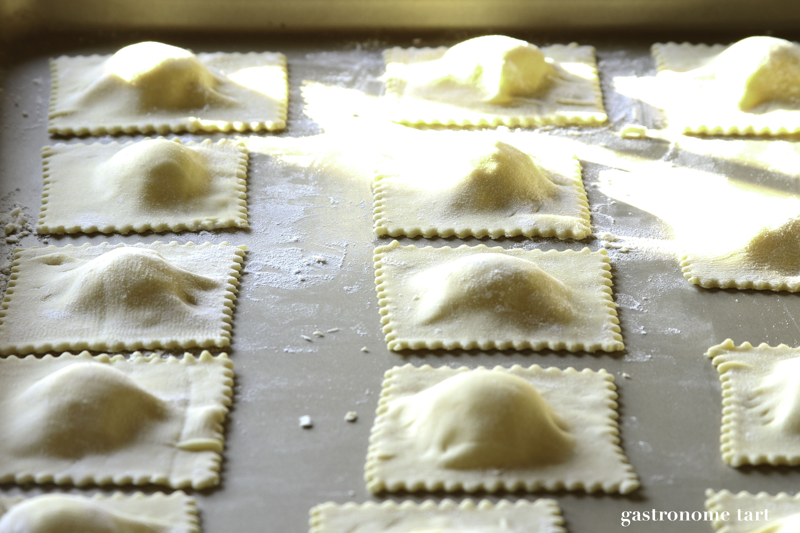
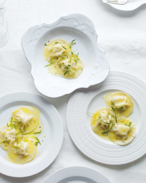

2 teaspoons lemon peel, very finely chopped, plus 2 teaspoons fresh lemon juice
1 stick unsalted butter
Directions
Make the filling: Mix together ricotta, crabmeat, 1/2 teaspoon salt, 1/8 teaspoon pepper, and the red-pepper flakes.
Make the ravioli: Lightly flour a baking sheet. Working in batches, arrange 45 wonton wrappers on a work surface; keep remaining wrappers covered with a damp paper towel. Mound 1 teaspoon crab filling in the center of each. Brush edges of wrappers with egg wash, and top each with another wrapper. Press edges to seal. Cut out circles using a 2 1/4-inch cookie cutter; transfer to baking sheet.
Bring a large pot of salted water to a boil. Working in 2 batches, cook ravioli until they rise to the top, 2 to 3 minutes.
Meanwhile, make the sauce: Heat a large skillet over medium heat. Melt 4 tablespoons butter, and heat until just bubbling and frothy. Transfer first batch of ravioli to skillet using a slotted spoon, along with about 2 tablespoons cooking liquid. Add 1 teaspoon chopped lemon peel and 1 teaspoon juice, and swirl to combine. Transfer to plates.
Repeat with second batch of ravioli.
  
Savannah
Hancock Highschool
Exploring Computer Science Pilot Course, 3rd block
Last updated: May 2018
URL:savannuur.github.io/foodhowto
.png)